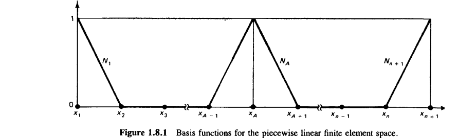
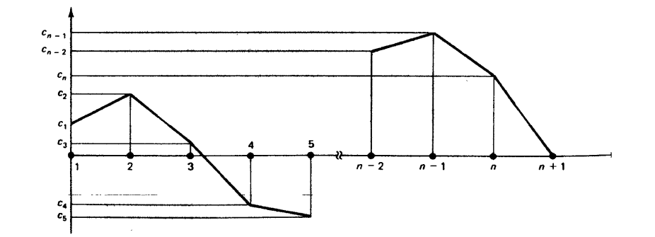
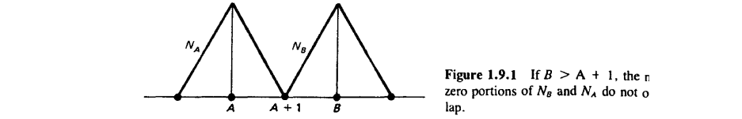
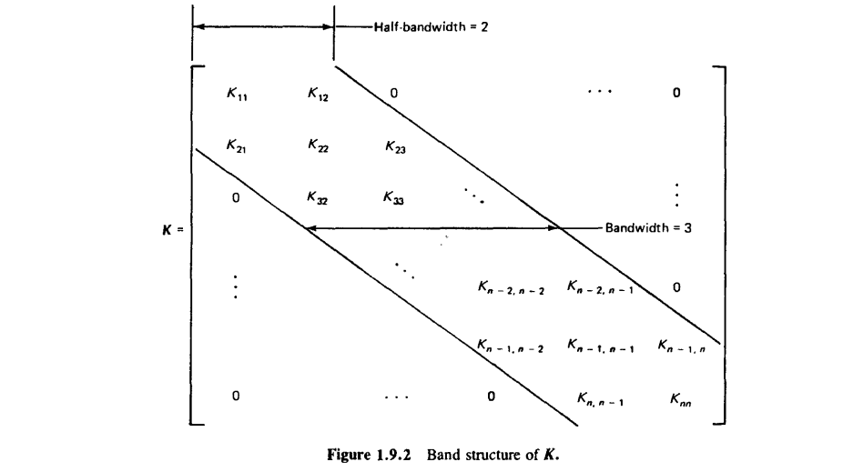
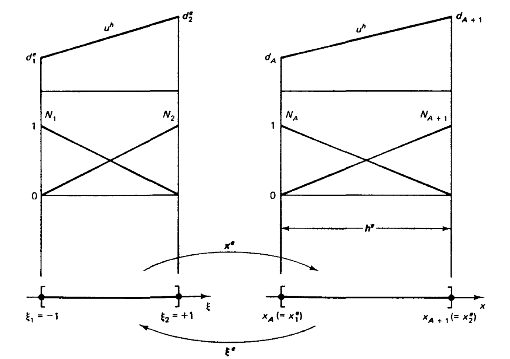
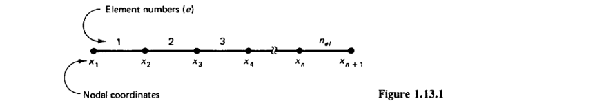
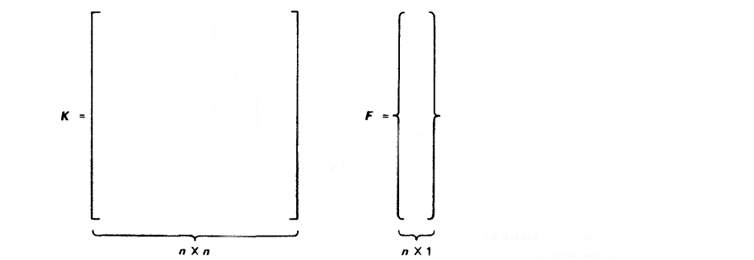
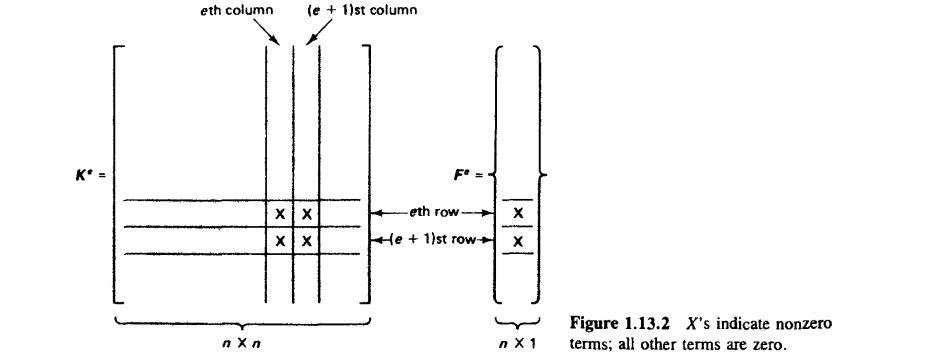
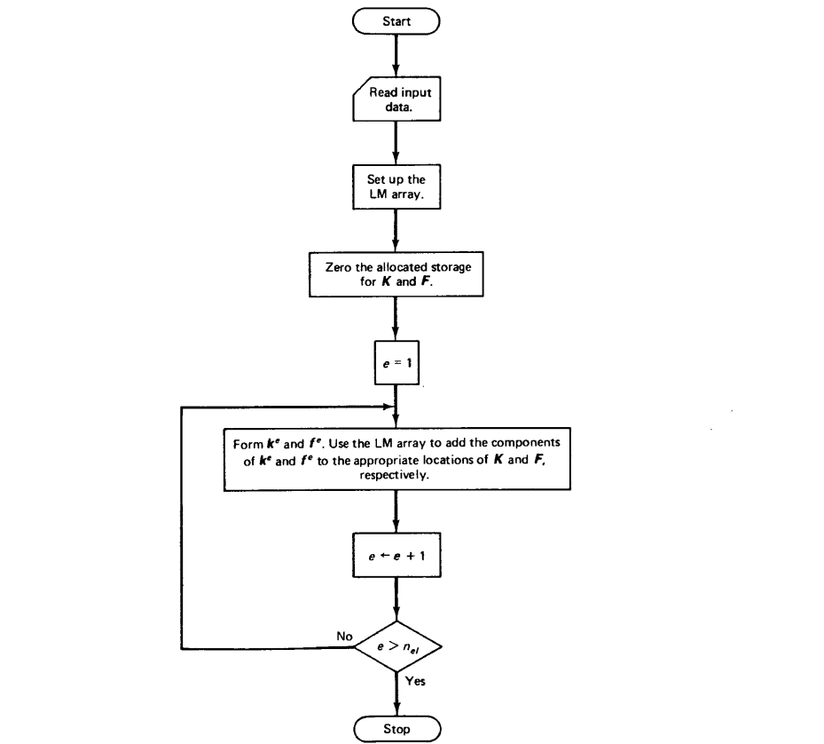

\(\leftarrow\) Previous Lecture
Associate to a typical internal node (i.e., \(2\leq A \leq N\))
whereas for the boundary nodes we have \(N_1(x) = \frac{x_2 - x}{h_1}\), and \(N_{n+1}(x) = \frac{x-x_n}{h_n}\).
The shape functions are also referred to as “hat”, or “roof” functions.

A typical member \(w^h \in \mathscr{V}^h\) has the form \(\sum_{A=1}^n c_A N_A\) and appear as below.

With a matrix structure with zeros outside the diagonal band, \(\boldsymbol{K}\) is said to be banded.


Definition. An \(n\times n\) matrix \(\boldsymbol{A}\) is said to be positive definite if
An individual element consists of the following quantities:
| (g1) | Domain: | \([x_A,\,x_{A+1}]\) |
| (g2) | Nodes: | \(\{x_A,\,x_{A+1}\}\) |
| (g3) | Degrees of freedom: | \(\{d_A,\,d_{A+1}\}\) |
| (g4) | Shape functions: | \(\{N_A,\,N_{A+1}\}\) |
| (g5) | Interpolation function: |
\[ u^h(x) = N_A(x) d_A + N_{A+1}(x) d_{A+1} \]
An individual element consists of the following quantities:
| (l1) | Domain: | \([\xi_1,\,\xi_2]\) |
| (l2) | Nodes: | \(\{\xi_1,\,\xi_2\}\) |
| (l3) | Degrees of freedom: | \(\{d_1,\,d_2\}\) |
| (l4) | Shape functions: | \(\{N_1,\,N_2\}\) |
| (l5) | Interpolation function: |
\[ u^h(\xi) = N_1(\xi) d_1 + N_2(\xi) d_2 \]
An affine (linear) mapping is provided by \[ \xi(x) = c_1 + c_2 x \] where \(c_1\) and \(c_2\) are determined by
Solving this system yields the mapping \(\xi(x)\)
The local and global descriptions of the $e$th element are depicted below

Start with the global approach
Assume that the model consists of \(n_{el}\) elements, numbered as shown below

Components of the global stiffness matrix, \(K_{AB}\), and force vector, \(F_A\) are calculated by taking integrals over the domain, \(\Omega\) as
Contributions from the left, mid and right node should be illustrated on board!

If the integrals over the domain \([0,1]\) are written as a sum piecewise sum of terms out of the adjacent subdomains, i.e. \([x_A,x_{A+1}]\), the so-called element domains, we see
\[ \begin{align} \boldsymbol{K} = \sum_{e=1}^{n_{el}} \boldsymbol{K}^e, \hspace{2em} & \boldsymbol{K}^e = [K_{AB}^e] \\ \boldsymbol{F} = \sum_{e=1}^{n_{el}} \boldsymbol{F}^e, \hspace{2em} & \boldsymbol{F}^e = [F_{A}^e] \end{align} \]where
\[ \begin{align} {K}_{AB}^e & = a(N_A, N_B)^e = \int_{\Omega^e} N_{A,x} N_{B,x} dx \\ {F}_A^e & = (N_A,\mathscr{f})^e + \delta_{1e} \delta_{1A} \mathscr{h} - a(N_A,N_{n+1})^e \, \mathscr{g} \\ & = \int_{\Omega^e} N_A \mathscr{f} dx + \delta_{1e} \delta_{1A} \mathscr{h} - \int_{\Omega^e} N_{A,x} N_{n+1,x} dx \mathscr{g} \end{align} \]and \(\Omega^e = [x_1^e,x_2^e]\), denote the eth element/subdomain. (Also note that the Kroenecker symbol \(\delta_{1e}\) is required to ensure that the only contribution is from the respective element.)
An important observation to make is that \(\boldsymbol{K}\) and \(\boldsymbol{F}\) can be constructed by summing the contributions of elemental matrices and vectors, respectively. In the literature, this procedure is sometimes called the direct stiffness method.

In practice, we do not carry the full matrix containing many zeros but merely add in the nonzero terms to the appropriate locations. For this purpose, it is useful to define the eth element stiffness matrix, \(\boldsymbol{k}^e\) and element force vector, \(\boldsymbol{f}^e\) as follows:
\[ \begin{align} & \boldsymbol{k}^e = \underbrace{[k_{ab}^e]}_{2\times 2}\,, \hspace{2em} \boldsymbol{f}^e = \underbrace{\{f_a^e\}}_{2\times 1}\,, \hspace{2em} a,b=1,2 \\ & k_{ab}^e = a(N_a, N_b)^e = \int_{\Omega^e} N_{a,x} N_{b,x} dx\\ & f_a^e = \int_{\Omega^e} N_a \mathscr{f} dx + \begin{cases} \delta_{1a} \mathscr{h} \hspace{2em} & e = 1\\ 0 & e = 2,3,\ldots,n_{el}-1 \\ -k_{a2}^e \mathscr{g} & e = n_{el} \end{cases} \end{align} \]It is important to understand that while \(\boldsymbol{k}^e\) and \(\boldsymbol{f}^e\) are defined with respect to the local ordering, \(\boldsymbol{K}^e\) and \(\boldsymbol{F}^e\) are defined with respect to the global ordering. To determine the addressing or mapping of the components of \(\boldsymbol{k}^e\) and \(\boldsymbol{f}^e\) into the global forms, additional information will be injected into the data structures.
The assembly procedures require several definitions related with the problem such as
The action of the assemblage algorithm is denoted by \(\mathcal{A}\), the assembly operator, vis., \[ \boldsymbol{K} = \underset{e=1}{\overset{n_{el}}{\mathcal{A}}} (\boldsymbol{k}^e) \]
The assembly procedure is shown below:
